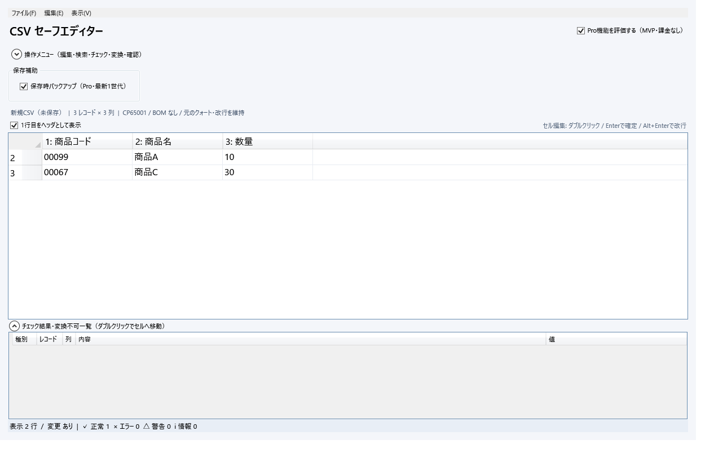

値を文字列として保持
「00123」や「1E10」を数値へ変換しません。カンマ、ダブルクォート、セル内改行にも対応します。
Windows 11 · データはPC内で処理
先頭ゼロ、指数表記、日付らしい値。Excelで意図せず変わりやすいデータを、文字列のまま確認して編集できます。

編集前に確認する。
壊れそうなら止める。
変更内容を見せてから適用する。
安全なCSV編集
「00123」や「1E10」を数値へ変換しません。カンマ、ダブルクォート、セル内改行にも対応します。
UTF-8とShift-JIS、区切り文字、BOM、改行を判定。上書き保存では元の形式を維持します。
保存不能文字や外部変更を検出。Proでは列チェック、変換プレビュー、保存前差分も利用できます。
大きなCSVでも画面を固めにくい設計です。検索、フィルター、置換、Undo・Redoを備えています。
無料から開始
| 機能 | 無料版 | Pro |
|---|---|---|
| CSVを開く・編集・安全に保存 | ● | ● |
| 検索・置換・基本フィルター | ● | ● |
| 文字コード・区切り文字の自動判定 | ● | ● |
| 列ごとのチェックとテンプレート | — | ● |
| 一括変換と変換前プレビュー | — | ● |
| 保存前差分・自動バックアップ | — | ● |
| EBCDICコードページ変換 | — | ● |
買い切りライセンス
1名で使う場合は、勤務先や用途を問わずPersonalを選べます。同一法人・団体で2名以上が使う場合はBusinessが必要です。
Pro Personal
3,980円
記名された1名・PC2台まで
Stripe準備中Pro Business 3
12,900円
3名まで・1名につきPC2台
Stripe準備中Pro Business 5
19,800円
5名まで・1名につきPC2台
Stripe準備中Pro Business 10
34,800円
10名まで・1名につきPC2台
Stripe準備中表示価格はお支払総額です。販売者は適格請求書発行事業者ではないため、適格請求書（インボイス）は発行できません。ライセンスはStripe決済確認後1営業日以内にメールで送付します。送付後の購入者都合による返金はできません。
販売条件をすべて確認する動作環境
アプリ本体に.NETランタイムを同梱しています。Excelは必要ありません。
Windows 10は正式な動作保証およびサポートの対象外です。
無料版
無料版に期限はありません。基本編集、検索、置換、形式維持を確認できます。